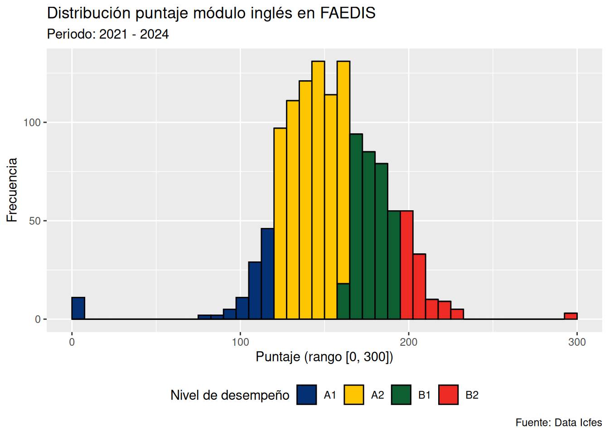
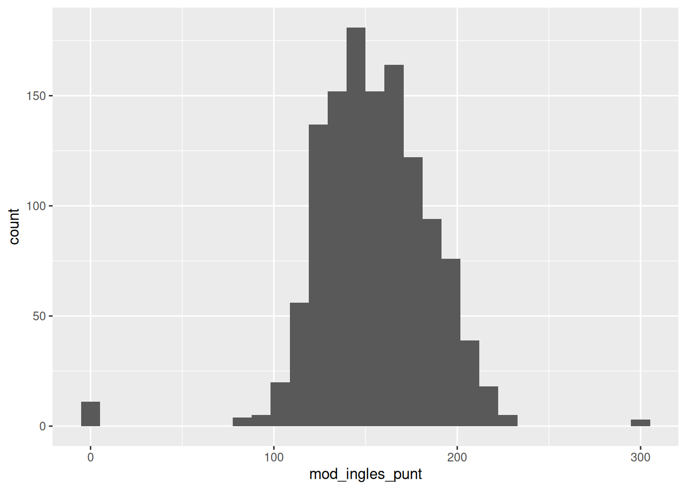
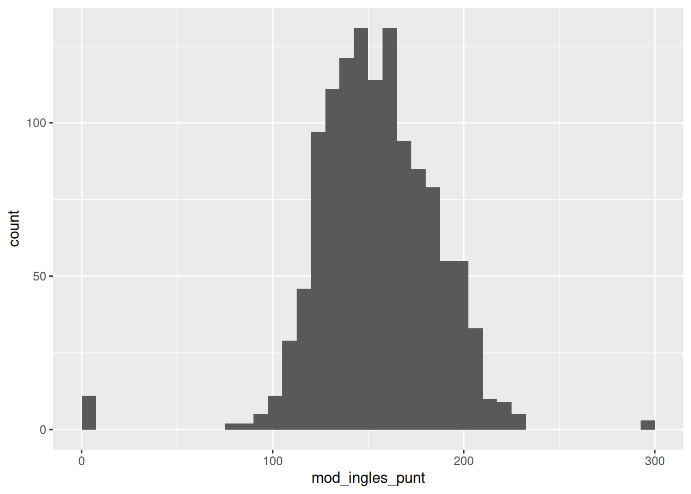

ggplot2
Este capítulo se basa en (Wickham, 2016) y (Wilke, 2019) así como en la documentación oficial de ggplot2 donde tiene como propósito utilizar el modelo mental de la gramática de gráficos en capas para visualizar la distribución de variables numéricas utilizando el paquete ggplot2 e información de los resultados del examen Saber Pro del grupo de competencias genéricas correspondientes a programas de pregrado de la Facultad de Estudios a Distancia (FAEDIS) de la Universidad Militar Nueva Granada (UMNG).
Exploraremos los siguientes aspectos:
color y fill?Para desarrollar el contenido de este capítulo es necesario que hayas completado la descarga y ubicación del archivo 2021-2024_saber-pro-genericas_faedis.rds dentro de la carpeta data, respecto a lo descrito en la Nota 6.1.
En caso que hayas seguido estas indicaciones, procede a crear una nueva carpeta llamada 007_visualizar-distribuciones-en-r y dentro de ella genera el archivo 001_visualizar-distribuciones-datos-faedis.R, siguiendo las pautas de la Sección 4.4.
En esta sección realizarás un histograma señalando la distribución del puntaje del módulo de inglés por nivel de desempeño para los programas de pregrado de la Facultad de Estudios a Distancia de la Universidad Militar en el periodo 2021-2024, tal como se indica en la Figura 7.1.

ggplot2
En primera instancia es necesario importar los datos para explorarlos en R como se señala a continuación teniendo en cuenta lo indicado en la Nota 7.1.
# Importar datos ----
saber_pro_genericas_faedis_2021_2024 <- read_rds(
file = "data/2021-2024_saber-pro-genericas_faedis.rds"
)Luego, se puede utilizar la función ggplot() y el parámetro data, asociando la coordenada x a la variable mod_ingles_punt para definir el mapeo así como el operador + junto con la función geom_histogram() para visualizar la distribución de una variable numérica, tal como se señala a continuación:
ggplot(
data = saber_pro_genericas_faedis_2021_2024,
mapping = aes(x = mod_ingles_punt)
) +
geom_histogram()`stat_bin()` using `bins = 30`. Pick better value
`binwidth`.
Para visualizar una distribución de una variable numérica se requieren definir determinados argumentos para un conjunto de parámetros. Por ejemplo, al ejecutar el código del Listado 7.1 se genera un mensaje indicado el número de contenedores (ver stat_bin() using bins = 30) que por defecto se utiliza para generar el histograma o solicitando seleccionar al usuario un determinado ancho del contenedor (ver Pick better value binwidth). En la literatura se han propuesto diferentes criterios (ver Nota 7.2) para determinar el número de contenedores o el ancho de cada contenedor pero en el caso del paquete ggplot2 esta decisión se traslada al usuario respecto a que valor finalmente desea fijar.
En la sección Number of bins and width del artículo de Wikipedia relacionado con el término histogram se puede consultar la lista de criterios más conocidos que se han propuesto para definir el número de contenedores o el ancho de cada contenedor en un histograma.
Para fines ilustrativos se fijará el parámetro bins con el argumento 40, como bins = 40, con el propósito de recrear la Figura 7.1 donde en el Capítulo 7 no se ahondará en los criterios señalados en la Nota 7.2. También si se examina el gráfico generado por el Listado 7.1 el primer contenedor include valores negativos. Sin embargo, el rango de la variable mod_ingles_punt es \([0, 300]\). Para mejorar este aspecto existe el parámetro boundary que se utiliza para anclar el borde inicial a partir del cuál el número de contenedores se generan de izquierda a derecha. En este caso podemos utilizar éste parámetro con el argumento 0, como boundary = 0. Aplicando estos aspectos como se muestra a continuación podemos mejor el histograma relacionado con el Listado 7.1 y eliminar el mensaje que inicialmente se señalaba respecto al número de contenedores que se fijaban por defecto:
ggplot(
data = saber_pro_genericas_faedis_2021_2024,
mapping = aes(x = mod_ingles_punt)
) +
geom_histogram(
boundary = 0,
bins = 40
)
Pending: add manual de identidad visual umng and hex codes
https://www.colorhexa.com/ https://www.w3schools.com/html/html_colors_hex.asp https://developer.mozilla.org/en-US/docs/Web/CSS/Reference/Values/hex-color https://ggplot2.tidyverse.org/reference/scale_colour_continuous.html https://ggplot2.tidyverse.org/reference/aes_colour_fill_alpha.html